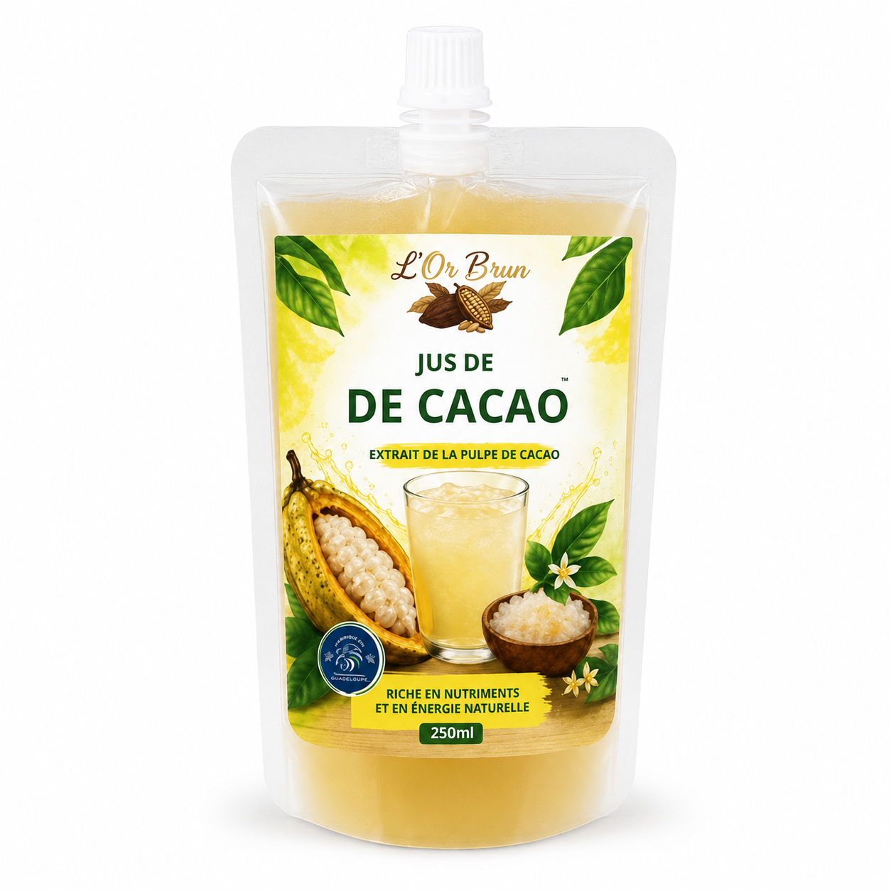

250 ml · 4,50 €
Jus de cacao
Une boisson fraîche au profil naturellement fruité, issue de la pulpe du fruit du cacaoyer.

Le fruit du cacao
Une boisson fraîche et singulière
Le jus de cacao valorise la pulpe qui entoure les fèves. Son profil fruité convient à la restauration, aux hôtels, aux distributeurs et aux concepts de boissons originales.
- Format individuel
- Profil fruité
- Pulpe de cacao
- Stock actualisé
- Produit
- Jus de cacao KIC
- Format
- 250 ml
- Prix
- 4,50 €
- Distribution
- Selon disponibilité